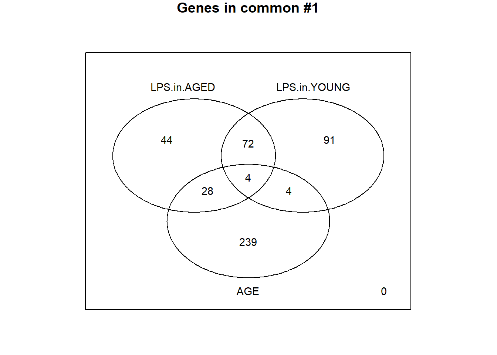
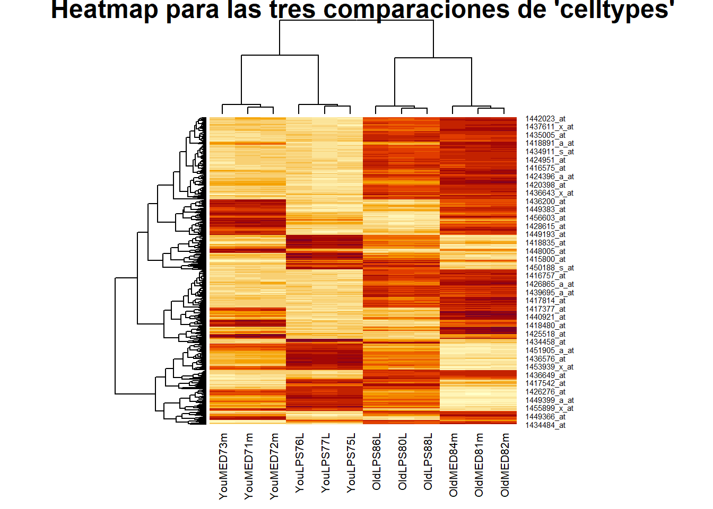
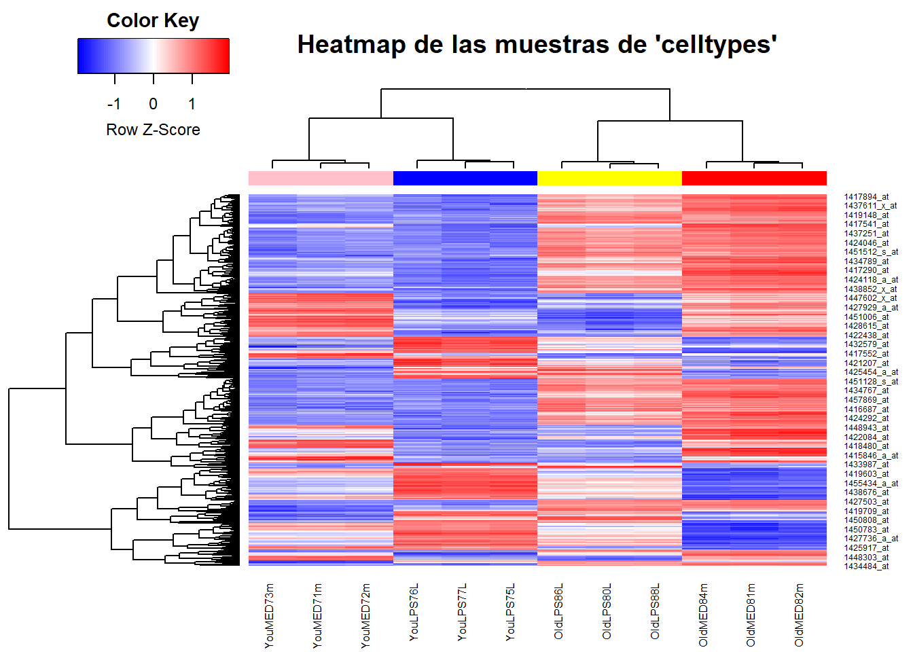

El resultado de un análisis de microarrays como los descritos hasta el momento suele ser una “lista de genes”, es decir una archivo o una tabla con los identificadores de los genes considerados diferencialmente expresados en una o más comparaciones.
La pregunta obvia que los investigadores se plantean al disponer de estas listas es ¿cuál es su significado biológico?.
Para el bioinfomatico eta pregunta se replantea de la siguiente manera: ¿Que se puede hacer para convertir -de forma más o menos automática– la lista obtenida en algún tipo de información biológicamente relevante. Esta cuestión ha llevado al desarrollo de métodos y herramientas que de forma general se agrupan bajo el título de métodos para el análisis de listas de genes o métodos de análisis de la significación biológica.
Siendo este un campo muy extenso no lo vamos a desarrollar en profundidad sinó que nos limitaremos a considerar brevemente algunas aproximaciones sencillas que pueden contribuir a una mejor interpretación de los resultados de un experimento de microarrays.
Los aspectos que trataremos serán:
Muchos estudios analizan el comportamiento de los genes bajo varios tratamientos o condiciones experimentales.
En estos casos puede ser interesante ver como cambia un gen bajo distintos tratamientos o bien ver qué genes son afectados de forma parecida o distinta bajo los mismos. La forma habitual de hacer esta comparación es mediante algún programa que permita comparar los elementos de dos o más listas. En Bioconductor, por ejemplo el paquete limma tiene algunas funciones que permiten seleccionar los genes cambiados simultaneamente en dos o más condiciones.
Supondremos que tras las comparaciones del capítulo anterior disponemos de los valores de expresión y las listas de genes obtenidas de las tres comparaciones del caso cellypes. Ambos están almacenados en archivos binarios que podemos recuperar con la instrucción load.
require(Biobase)
require(limma)
load("datos/celltypes/celltypes-normalized.rma.Rda")
load("datos/celltypes/celltypes-fit.main.Rda")
topTab_LPS.in.AGED <- topTable (fit.main, number=nrow(fit.main), coef="LPS.in.AGED", adjust="fdr",lfc=2)
topTab_LPS.in.YOUNG <- topTable (fit.main, number=nrow(fit.main), coef="LPS.in.YOUNG", adjust="fdr",lfc=2)
topTab_AGE <- topTable (fit.main, number=nrow(fit.main) , coef="AGE", adjust="fdr", lfc=2)La función decidetests permite realizar ambas cosas. En este ejemplo no se ajustaran los p–valores entre comparaciones. Tan solo se seleccionaran los genes que cambian en una o más condiciones.
EL resultado del análisis es una tabla res que para cada gen y cada comparación contiene un 1 (si el gen esta sobre-expresado o “up” en esta condicion), un 0 (si no hay cambio significativo) o un -1 (si esta “down”-regulado).
Para resumir dicho análisis podemos contar qué filas tienen como mínimo una celda distinta de cero:
## LPS.in.AGED LPS.in.YOUNG AGE
## Down 556 561 558
## NotSig 9281 9239 8740
## Up 417 454 956En vista de estos valores podemos aplicar otros criterios de selección, por ejemplo genes con un p-valor ajustado inferior a 0.0001 y log Fold change mayor o igual a 2._ Este criterio combina a la vez la significación estadística y la significación biológica por lo que, en un estudio real sería probablemente el escogido_.
## LPS.in.AGED LPS.in.YOUNG AGE
## Down 71 83 45
## NotSig 10106 10083 9979
## Up 77 88 230Un diagrama de Venn permite visualizar la tabla anterior sin diferenciar entre genes “up” o “down” regulados.

Figure 8.1: Número de genes seleccionado en cada comparación
La identificación de los genes seleccionados puede resultar más sencilla para el especialista en un campo si se utilizan nombres estándar como el simbolo del gen o “gene symbol”. Ahora bien hemos de recordar que los microarrays suele ser un producto comercial en los que la empresa que los crea decide que sondas de cada gen o exón coloca en cada posición del array. Esto significa que para poder indicar el nombre de cada gen seleccionado es preciso disponer de algún tipo de tabla de anotaciones que relacione cada sonda con los genes a los que apunta. Esta tabla debería ser proporcionada por las companñias que producen los arrays pero es algo que queda a su criterio y, en el mejor de los casos, cada empresa puede seguir unos criterios distintos.
Afortunadamente si se trabaja con Bioconductor existe una solución homogenea a este problema. Se trata de los paquetes de anotaciones creados y mantenidos por el equipo de Bioconductor a partir de la información publicada por cada compañia pero con una forma común de acceso. Es decir aunque las distintas empresas utilicen fotmatos distintos desde el punto de vista del usuario de Bioconductor esto no importará: si existe el paquete se utiliza como todos los demás.
De hecho Bioconductor incorpora varios tipos de paquetes de anotaciones:
Para saber que anotaciones estan disponibles debe cargarse el paquete y llamar la función del mismo nombre. Por ejempl para los microarrays del caso celltypes:
Para saber que anotaciones estan disponibles debe cargarse el paquete y llamar la función del mismo nombre sin el sufijo “.db”.
## [1] "Quality control information for mouse4302:"
## [2] ""
## [3] ""
## [4] "This package has the following mappings:"
## [5] ""
## [6] "mouse4302ACCNUM has 45101 mapped keys (of 45101 keys)"
## [7] "mouse4302ALIAS2PROBE has 81336 mapped keys (of 184492 keys)"
## [8] "mouse4302CHR has 37432 mapped keys (of 45101 keys)"
## [9] "mouse4302CHRLENGTHS has 66 mapped keys (of 61 keys)"
## [10] "mouse4302CHRLOC has 34742 mapped keys (of 45101 keys)"
## [11] "mouse4302CHRLOCEND has 34742 mapped keys (of 45101 keys)"
## [12] "mouse4302ENSEMBL has 34432 mapped keys (of 45101 keys)"
## [13] "mouse4302ENSEMBL2PROBE has 18067 mapped keys (of 33441 keys)"
## [14] "mouse4302ENTREZID has 37466 mapped keys (of 45101 keys)"
## [15] "mouse4302ENZYME has 4480 mapped keys (of 45101 keys)"
## [16] "mouse4302ENZYME2PROBE has 954 mapped keys (of 971 keys)"
## [17] "mouse4302GENENAME has 37466 mapped keys (of 45101 keys)"
## [18] "mouse4302GO has 34021 mapped keys (of 45101 keys)"
## [19] "mouse4302GO2ALLPROBES has 22446 mapped keys (of 22692 keys)"
## [20] "mouse4302GO2PROBE has 18283 mapped keys (of 19155 keys)"
## [21] "mouse4302MGI has 37455 mapped keys (of 45101 keys)"
## [22] "mouse4302MGI2PROBE has 20485 mapped keys (of 131207 keys)"
## [23] "mouse4302PATH has 10731 mapped keys (of 45101 keys)"
## [24] "mouse4302PATH2PROBE has 225 mapped keys (of 225 keys)"
## [25] "mouse4302PMID has 37302 mapped keys (of 45101 keys)"
## [26] "mouse4302PMID2PROBE has 327939 mapped keys (of 400012 keys)"
## [27] "mouse4302REFSEQ has 35206 mapped keys (of 45101 keys)"
## [28] "mouse4302SYMBOL has 37466 mapped keys (of 45101 keys)"
## [29] "mouse4302UNIPROT has 33001 mapped keys (of 45101 keys)"
## [30] ""
## [31] ""
## [32] "Additional Information about this package:"
## [33] ""
## [34] "DB schema: MOUSECHIP_DB"
## [35] "DB schema version: 2.1"
## [36] "Organism: Mus musculus"
## [37] "Date for NCBI data: 2021-Apr14"
## [38] "Date for GO data: 2021-02-01"
## [39] "Date for KEGG data: 2011-Mar15"
## [40] "Date for Golden Path data: 2021-Feb16"
## [41] "Date for Ensembl data: 2021-Feb16"## ... output continues until 41 lines.Si en vez del paquetes del microarray usáramos el paquete de organismo, en este caso del ratón.
if (!(require(org.Mm.eg.db))){
biocLite("org.Mm.eg.db")
}
require(org.Mm.eg.db)
anotData <- capture.output(org.Mm.eg())
print(anotData[1:15])## [1] "Quality control information for org.Mm.eg:"
## [2] ""
## [3] ""
## [4] "This package has the following mappings:"
## [5] ""
## [6] "org.Mm.egACCNUM has 46172 mapped keys (of 112288 keys)"
## [7] "org.Mm.egACCNUM2EG has 620797 mapped keys (of 620797 keys)"
## [8] "org.Mm.egALIAS2EG has 184492 mapped keys (of 184492 keys)"
## [9] "org.Mm.egCHR has 111453 mapped keys (of 112288 keys)"
## [10] "org.Mm.egCHRLENGTHS has 61 mapped keys (of 61 keys)"
## [11] "org.Mm.egCHRLOC has 26232 mapped keys (of 112288 keys)"
## [12] "org.Mm.egCHRLOCEND has 26232 mapped keys (of 112288 keys)"
## [13] "org.Mm.egENSEMBL has 33578 mapped keys (of 112288 keys)"
## [14] "org.Mm.egENSEMBL2EG has 33441 mapped keys (of 33441 keys)"
## [15] "org.Mm.egENSEMBLPROT has 9308 mapped keys (of 112288 keys)"## ... output continues until 48 lines.Cada tabla de asociación puede consultarse de diversas formas,
Por ejemplo si tomamos los cinco primeros genes seleccionados en la comparación “LPS.in.AGED”
## Usando mget## 1450826_a_at 1449450_at 1419607_at 1419681_a_at 1419209_at
## "Saa3" "Ptges" "Tnf" "Prok2" "Cxcl1"## Usando toTablegenesTable<- toTable(mouse4302SYMBOL)
rownames(genesTable) <- genesTable$probe_id
genesTable[top5, 2]## [1] "Saa3" "Ptges" "Tnf" "Prok2" "Cxcl1"## Usando getSYMBOL## 1450826_a_at 1449450_at 1419607_at 1419681_a_at 1419209_at
## "Saa3" "Ptges" "Tnf" "Prok2" "Cxcl1"Bioconductor dispone de algunos paquetes que permiten aprovechar esta funcionalidad anterior para obtener las anotaciones de cada gen y generar una tabla HTML con enlaces a algunas bases de datos.
De forma sencilla es posible obtener tablas con las anotaciones correspondientes a los genes seleccionados. Si se desea ser más ambicioso es posible generar tablas en las que se combinen hiperenlaces a las anotaciones con los resultados de la selección de genes.
El paquete annafy permite de forma muy simple generar una tabla de anotaciones con hiperenlaces a las bases de datos para cada anotación seleccionada.
La instrucción siguiente crearia una tabla con las anotaciones disponibles para los genes seleccionados en la sección de comparaciones múltiples.
Tras seleccionar los genes diferencialmente expresados podemos visualizar las expresiones de cada gen agrupándolas para destacar los genes que se encuentran up o down regulados simultáneamente constituyendo perfiles de expresión.
Hay distintas formas de visualización pero aquí tan sólo se presenta el uso de mapas de color o Heatmaps cuyos fundamentos se explican en el capítulo dedicado al descubrimiento de clases.
En primer lugar seleccionamos los genes a visualizar: Se toman todos aquellos que han resultado diferencialmente expresados en alguna de las tres comparaciones.
probeNames<-rownames(res)
probeNames.selected<-probeNames[sum.res.rows!=0]
exprs2cluster <-exprs(eset_rma_filtered)[probeNames.selected,]
colnames(exprs2cluster)<- c("OldLPS80L", "OldLPS86L", "OldLPS88L",
"OldMED81m", "OldMED82m", "OldMED84m",
"YouLPS75L", "YouLPS76L", "YouLPS77L",
"YouMED71m", "YouMED72m", "YouMED73m")Para representar el Heatmap tan sólo necesitamos la matriz de datos resultante.
color.map <- function(grupo) {
switch(grupo,
"yellow",
"red",
"blue",
"pink")
}
grupColors <- unlist(lapply(pData(eset_rma_filtered)$grupo, color.map))
heatmap(exprs2cluster,
cexCol=0.8,
main="Heatmap para las tres comparaciones de 'celltypes'", cex.main=0.8)
Si se desea realizar mapas de color más sofisticados puede utilizarse el paquete Rpackage{gplots} que implementa una version mejorada en la función heatmap.2
require("gplots")
heatmap.2(exprs2cluster,
col=bluered(75), scale="row",
ColSideColors=grupColors, key=TRUE, symkey=FALSE,
density.info="none", trace="none", cexCol=0.8,
main="Heatmap de las muestras de 'celltypes'", cex.main=0.6)
En las secciones anteriores se ha visto como encontrar los identificadores de los genes en distintas bases de datos, lo que permite por ejemplo conocer sus nombres comunes (“gene symbol”).
Otra aproximación razonable es estudiar las funciones de los genes buscando sus anotaciones en bases de datos de anotación funcional como la Gene Ontology (GO), o la Kyoto Encyclopedia of Genes and Genomes.
Por ejemplo las anotaciones en GO para los cinco primeros genes de la lista analizada en <a href=``{r anchorLoc('anotExample')“>here serian:
## [1] "1450826_a_at"## 1450826_a_at
## "Saa3"GOAnots1 <- mget(top1, mouse4302GO)
for (i in 1:length(GOAnots1)){
for (j in 1:length(GOAnots1[[i]])){
GOAnot <- GOAnots1[[i]][[j]][[1]]
cat(top1[i],geneSymbol1[i],GOAnot,substr(Term(GOAnot),1,30), "\n")
}
}## 1450826_a_at Saa3 GO:0006953 acute-phase response
## 1450826_a_at Saa3 GO:0007252 I-kappaB phosphorylation
## 1450826_a_at Saa3 GO:0009617 response to bacterium
## 1450826_a_at Saa3 GO:0035634 response to stilbenoid
## 1450826_a_at Saa3 GO:0050918 positive chemotaxis
## 1450826_a_at Saa3 GO:0060326 cell chemotaxis
## 1450826_a_at Saa3 GO:0071347 cellular response to interleuk
## 1450826_a_at Saa3 GO:0005615 extracellular space
## 1450826_a_at Saa3 GO:0034364 high-density lipoprotein parti
## 1450826_a_at Saa3 GO:0035662 Toll-like receptor 4 binding
## 1450826_a_at Saa3 GO:0042056 chemoattractant activityComo se ve en el ejemplo el número de anotaciones para un gen en la Gene Ontology es muy alto, aparte de que, aunque aquí no se muestra, no todas las anotaciones tienen la misma fiabilidad.
Aparte del problema de lo extenso de las anotaciones está el hecho de que antes de empezar a hacer inferencias sobre el significado de una anotación debería poderse establecer si dicha anotación está relacionada con el proceso que se está estudiando o aparece por azar entre la muchas anotaciones de los genes de la lista. Hay diferentes métodos y modelos para hacer esto (ver Draghici y colegas, Khatri and Drăghici (2005) o Mosquera and Sánchez–Pla, Mosquera and Sánchez-Pla (2005),Sanchez:2007b) pero aquí se presentará brevemente lo que se conoce por Análisis de enriquecimiento.
El objetivo del análisis de enriquecimiento es establecer si una determinada categoría, que representa, por ejemplo, un proceso biológico (GO) o una vía (KEGG), aparece más (“enriquecido”) o menos (“pobre”) a menudo en la lista de genes seleccionados que en la población (génica), desde donde se han obtenido, es decir, el array, el genoma, o simplemente los genes que fueron seleccionados para la prueba. La idea básica es que si una función aparece más a menudo en la lista que en general es probable que tenga algo que ver con el proceso en base al cual se ha seleccionado la lista que se estudia.
Por ejemplo, consideremos un experimento que da una lista de genes y el 10% de los genes más diferencialmente expresados están asociados con el término apoptosis en la GO (GO:0006915). Esto puede parecer una proporción inusualmente grande de la lista de genes, dado que la apoptosis es un proceso biológico muy específico. Para determinar cuánto más grande de lo normal es esta proporción, debe ser comparada con la proporción de genes relacionados con apoptosis en la lista de genes de referencia, que suele ser el conjunto de todos los genes del microarray.
El análisis estadístico realizado para comparar proporciones es un test Hipergeométrico o el test exacto de Fisher que se utiliza para probar la hipótesis:
\[ H_0: \ p_{sel}^A = p_{all}^A \ vs \ H_1: \ p_{sel}^A \neq p_{all}^A, \]
donde \(A\) representa el conjunto de genes cuya más/menos representación está siendo considerada, \(p_{sel}^A\) es la proporción de genes seleccionados que están incluidos en este conjunto de genes y \(p_{all}^A\) es la proporción de genes de la lista de referencia.
Hay muchas herramientas que pueden ayudar a realizar este análisis. Siguiendo nuestra costumbre usaremos las que contiene el paquete de R(Bioconductor), principalmente en el paquete GOstats.
El análisis realizado utilizando este paquete procede de la forma siguiente:
El código siguiente ilustra como se procederá para realizar un análisis de enriquecimiento con las listas de genes seleccionados en la primera de las comparaciones realizadas en este capítulo.
require(GOstats)
require(mouse4302.db)
require(org.Mm.eg.db)
# Seleccionamos la "topTable"
topTab <- topTab_LPS.in.AGED
# Definimos el universo de genes: todos los que se han incluido en el análisis
# EL programa trabaja con identificadores "entrez" y no admite duplicados
entrezUniverse <- unique(getEG(as.character(rownames(topTab)), "mouse4302.db"))
# Escogemos los grupos de sondas a incluir en el análisis
# Este análisis trabaja bien con varios centenares de genes
# por lo que es habitual basarse en p-valores sin ajustar para incluirlos
whichGenes<-topTab["adj.P.Val"]<0.001
geneIds <- unique(getEG(as.character(rownames(topTab)[whichGenes]),"mouse4302.db"))
# Creamos los "hiperparámetros" en que se basa el análisis
GOparams = new("GOHyperGParams",
geneIds=geneIds, universeGeneIds=entrezUniverse,
annotation="org.Mm.eg.db", ontology="BP",
pvalueCutoff=0.001, conditional=FALSE,
testDirection="over")
# Ejecutamos los análisis
GOhyper = hyperGTest(GOparams)
# Creamos un informe html con los resultados
comparison = "topTab_LPS.in.AGED"
GOfilename =file.path(resultsDir,
paste("GOResults.",comparison,".html", sep=""))
htmlReport(GOhyper, file = GOfilename, summary.args=list("htmlLinks"=TRUE))El análisis basado en la base de datos de Pathways, KEGG será básicamente el mismo, cambiando únicamente el tipo de “hiperparámetro” invocado.
KEGGparams = new("KEGGHyperGParams",
geneIds=geneIds, universeGeneIds=entrezUniverse,
annotation="org.Mm.eg.db",
pvalueCutoff=0.01, testDirection="over")
# Ejecutamos los análisis
KEGGhyper = hyperGTest(KEGGparams)
# Creamos un informe html con los resultados
comparison = "topTab_LPS.in.AGED"
KEGGfilename =file.path(resultsDir,
paste("KEGGResults.",comparison,".html", sep=""))
htmlReport(KEGGhyper, file = KEGGfilename, summary.args=list("htmlLinks"=TRUE))